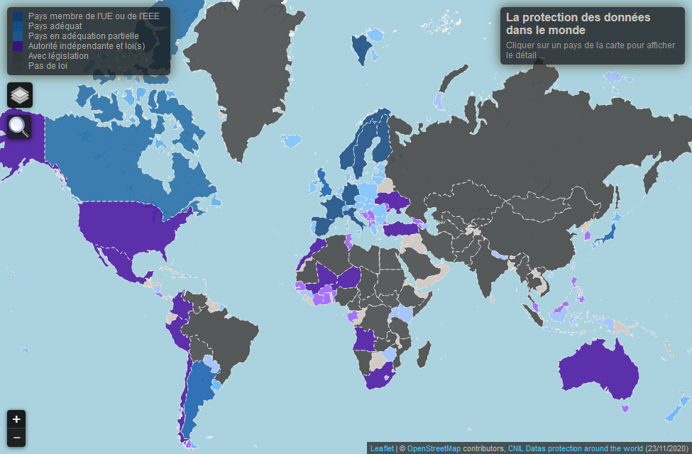
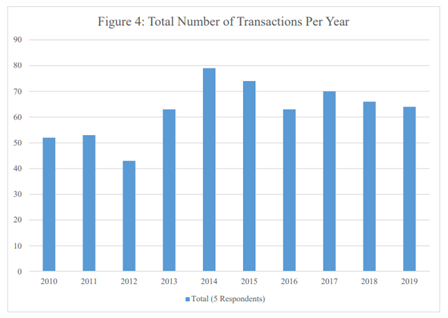

↑
Les entreprises « Donnivores » contre la protection des données :
Données comme modèle économique :
Les GAFAM tirent une, plus ou moins grande, partie de leurs revenus de la collecte puis revente ou utilisation des données. Ainsi, les GAFAM cherchent activement à soustraire des informations aux utilisateurs à des fins pécuniaires d’où le terme « Donnivores ». Si nous prenons le cas de Facebook, les informations remplies lors de l’inscription seront vendues à des entreprises dans le cadre de la publicité ciblée1. La collecte des données reste cependant autorisée via les conditions d’utilisation auxquelles les utilisateurs doivent donner leur accord lors de l’inscription. Néanmoins, il est arrivé plusieurs fois que la récolte d’informations aille au-delà des conditions d’utilisation, ou qu’il y ait un manque de transparence. De plus, les données deviennent un enjeu, de plus en plus majeur, que ce soit par la démocratisation d’Internet2 ou la numérisation de la société (passe sanitaire, inscription en ligne, etc...).
Les lois et institutions protégeant les données :
Pour répondre à ces problématiques, en Union Européenne, nous avons établi le RGPD3 (Règlement général sur la protection des données) adopté en 2016. Ci-dessous, voici une carte présentant les différents adhérents au RGPD ainsi que les pays possédant leurs propres organismes.
Le RGPD cherche à donner plus de contrôle des données personnelles aux utilisateurs avec, par exemple, les cookies ou le droit de pouvoir effacer ses données. Le RGPD s’est traduit par la loi du 20 juin 20184 qui charge la CNIL (Commission nationale de l'informatique et des libertés) de l’appliquer en France. Toujours en France, nous avons, en complémentarité, la loi du 6 janvier 1978 dite « Informatique et liberté »5 qui eut une nouvelle rédaction en 2019. La CNIL, qui s’assure donc du respect du RGPD, a par conséquent la mission d’informer les utilisateurs sur leurs droits en matière de données6. Mais elle a également le pouvoir de sanctionner pécuniairement les entreprises qui iront à l’encontre du RGPD.
Sanctions marquantes :
Les exemples de condamnation des GAFAM s’intensifient le long des années. On peut notamment penser à Google qui fut sanctionné plusieurs fois par la CNIL. Une première fois en 2014 pour non-conformité avec la loi « Informatique et Libertés »7. Une autre en 2019, à la hauteur de 50 millions d’euros pour manque de transparence concernant l’exploitation des données8. Et enfin, en 2020, pour 100 millions d’euros à cause de cookies jugés trop intrusives9. Amazon fut aussi condamné par la CNIL à une amende de 35 millions d’euros la même année pour les même raisons10. Et cette année Amazon fut aussi condamnée en Luxembourg pour 725 millions d’euros pour non-respect du RGPD11. On peut donc constater non seulement une augmentation, mais surtout un alourdissement des peines pour atteinte aux données personnelles depuis l’application du RGPD.
Constat des sanctions :
La volonté de multiplier les sanctions est de mettre la pression sur les GAFAM pour les dissuader de recourir à ces pratiques à l’avenir. On peut pourtant douter de l’efficacité de ces sanctions, le chiffre d’affaires des GAFAM dépassant les dizaines voire centaines de milliards de dollars12. De plus, certains GAFAM ont des modèles économiques basés entièrement sur les données. Facebook par exemple génère 98 % de ses revenues via la publicité qui dépend entièrement des données13. Tandis qu’Apple se concentrant surtout sur la vente de hardware, fait figure de bon élève et respecte le plus les lois sur les données. Il faudra voir à l’avenir, à partir de quel point les GAFAM céderont face aux sanctions de plus en plus sévères.
La position dominante des GAFAM
Établissement d’un monopole :
Les GAFAM, bien qu’étant des entreprises différentes, ne sont pas en concurrence entre elles. Chacune fournit un service du numérique différent ou possède au moins un public cible différent. De ce fait, elles ont le monopole sur leurs services respectifs et aucune autre entreprise ne peut vraiment rivaliser avec elles.
Législation antitrust :
Les lois antitrusts sont un ensemble de lois en faveur des consommateurs et de la mise en place d’une concurrence saine et loyale14. Aux États-Unis, c’est la Federal Trade Commission (FTC) qui se charge d’étudier le marché pour appliquer les lois15. En France, il s'agit de l’Autorité de la Concurrence qui a la capacité de sanctionner les entreprises16.
Abus de position de dominance :
À l’instar des données, il existe plusieurs affaires pour pratiques anticoncurrentielles. Par exemple, Microsoft fut condamné en 2004 pour vente de données liée avec une amende de 497 millions d’euros17. En 2013, Bruxelles lui inflige également une sanction 560 millions d’euros pour avoir favorisé Internet Explorer sur Windows18. Et enfin, Google dut payer 4,34 Milliards d’euros à la Commission européenne pour des pratiques anticoncurrentielles concernant son propre moteur de recherche sur Android19.
Rachat d’entreprises :
Les GAFAM, pour maintenir leur monopole et rester à la pointe de la technologie, procèdent à des rachats d’entreprises et start-up innovantes20. On peut penser par exemple aux achats de grosses entreprises comme GitHub par Microsoft21 ou encore WhatsApp par Facebook22. Cependant ce qui inquiète surtout, c’est l’achat de petites entreprises convertis en filiales.
Le rachat de ces start-ups ayant le potentiel de devenir de futur concurrents, peut s’apparenter à un rachat de la concurrence. Suite à une commission de la FTC, nous avons pu déterminer le nombre de transactions à plus de 600 ces 10 dernières années23. La FTC cherche activement à actualiser les lois antitrust américaines, car elles ne sont plus adaptées au contexte des GAFAM et donc obsolètes.
